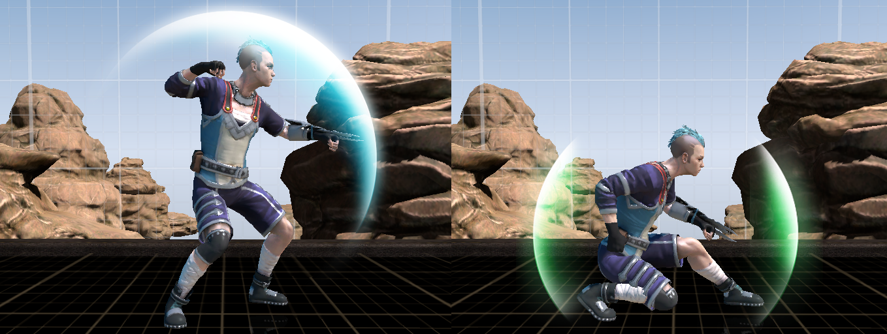
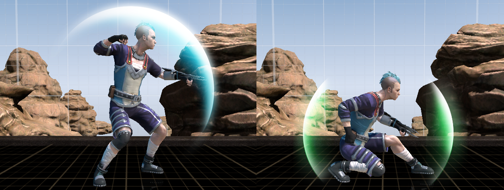

Loren Crain
- loren@bluehexagons.com
- SW Missouri
- Frontend Software Engineer
- Indie Dev
- Generalist Engineer
- Web Dev
- TypeScript
- React
- C#
- C
- Go
- SQL
- Linux Systems
Antistatic, an uncompromising platform fighting game, has been in development since 2012 as an experimental homage to Super Smash Bros. Melee. It is built in a custom engine, written in TypeScript and C, with a 3D OpenGL graphics engine.
Antistatic runs on top of Node.js, with the bulk written in TypeScript. Native portions are written in C, and run as a Node.js addon.
The graphics engine is also split, with lower-level code written in C and OpenGL and much of the model manipulation, vertex rendering, and animation written in TypeScript. FreeType is used to render a dynamically-growing font atlas. Other libraries used include: GLEW for OpenGL bindings, SDL2 for window management, and SDL2_image for image loading.
The audio engine uses OpenAL-soft to interface with hardware. Files are OGGs, and libvorbistools is used to decode them.
To connect to the official Wii U/Switch GameCube controller adapter, I used LibUSB to directly communicate with the adapter over USB.
Internationalization is handled using Fluent, with the language files available on GitHub. (And open to pull requests!)
Antistatic's matchmaking server is very simplistic, but is built in Go to run on a Linux host.
Netcode is peer-to-peer and delay-based, and some infrastructure work has been done to move toward adding rollback in the future. It runs on UDP, with higher-level messages encoded in JSON along with a binary stream of controller snapshots. The engine (poorly) attempts to synchronize beginning times and input delay, poke through permissive firewalls, and gracefully handle dropped packets.
Antistatic's build system is mostly automated starting from a build-free git repo, pulling in and installing dependencies as well as building a few binaries. The process is a mix of PowerShell and Bash scripts.
Originally, Antistatic ran in a web browser. The limitations started adding up, and I made the decision to move to Electron and add a native add-on. When I couldn't squeeze the consistent performance and hardware support I felt I needed, I re-implemented more pieces in C and moved onto Node.js directly.


At Zazzle, I built and maintained frontend UI infrastructure and for public and internal pages. The primary technologies I used were TypeScript, React, Redux/Sagas, and C#.
 

Air Dash Online was a prototype of a fast-paced platform fighting game by JV5 Games. As the lead programmer, I built its custom platform fighter gameplay engine inside of Unity and performed all non-graphics programming.


The open-source Food Guide (on GitHub) was created to simulate the in-game crock pot, which crafts different dishes depending on what four ingredients are chosen. It expanded to include more tools, and has been maintained since Don't Starve was in Early Access.
This website is hosted on a headless Linux server running nginx, written using modern HTML, CSS, and TypeScript. It's still under construction.